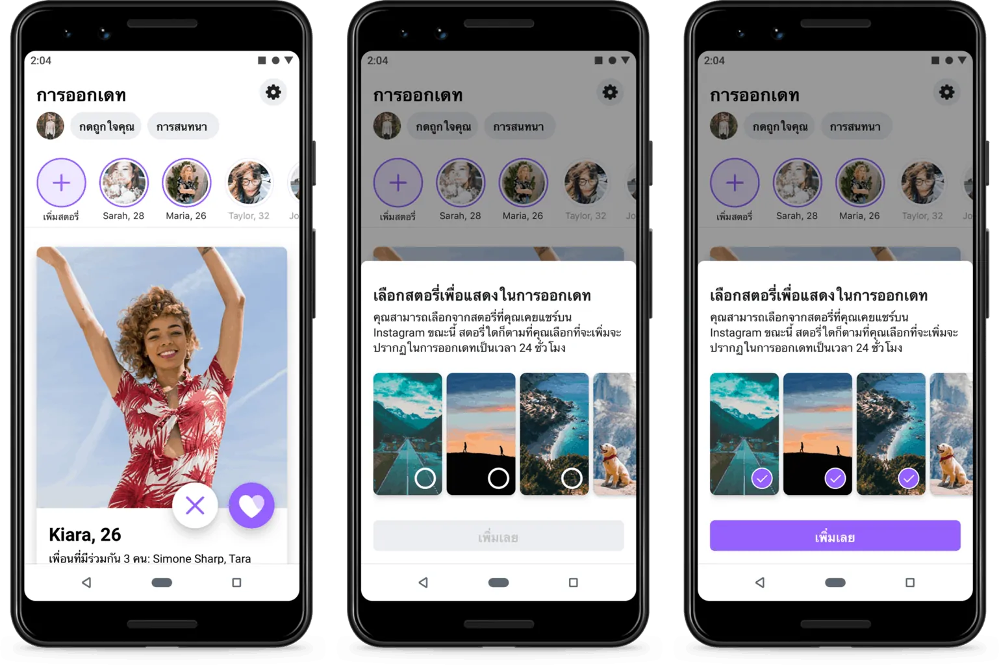
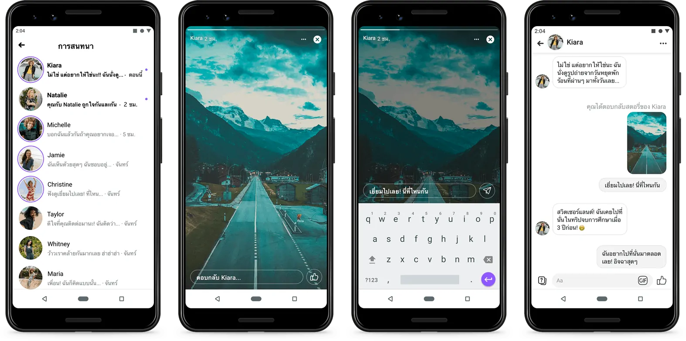
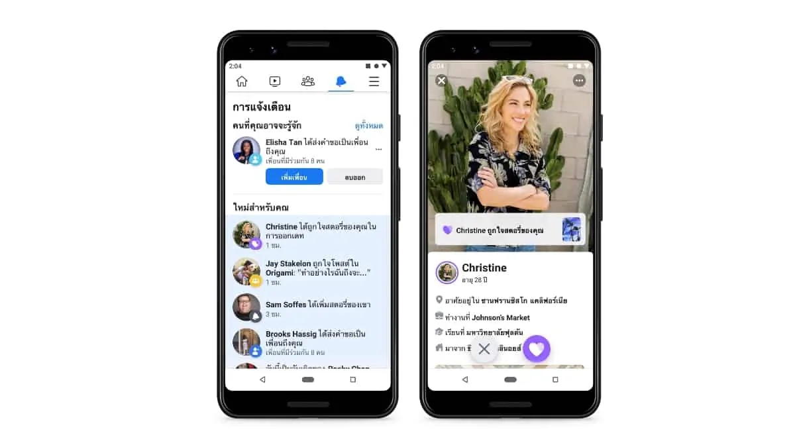

Facebook Dating เพิ่มฟีเจอร์ Stories ใหม่ล่าสุด หลัง Facebook Dating ได้ประกาศเปิดตัวในประเทศไทยเมื่อประมาณหนึ่งปีที่ผ่านมา โดยเป็นประเทศแรกในเอเชียตะวันออกเฉียงใต้ ทำให้การพบรักจากสิ่งที่คุณชื่นชอบเป็นเรื่องง่ายยิ่งขึ้น ช่วยให้คุณเริ่มต้นความสัมพันธ์ที่มีความหมายผ่านสิ่งต่างๆ ที่มีร่วมกัน อย่างไรก็ตาม ร้อยละ 54 ของผู้ใช้งานแอพหาคู่ยอมรับว่าการสื่อสารตัวตนผ่านทางหน้าโปรไฟล์เพียงช่องทางเดียวไม่อาจช่วยให้พวกเขาแสดงออกบุคลิกที่แท้จริงได้อย่างเต็มที่
ดังนั้น Facebook จึงประกาศเพิ่มฟีเจอร์ Stories ที่คุ้นเคยบน Instagram , facebook เอง มาเสริมเป็นฟีเจอร์ใหม่บน Facebook Dating ให้สามารถแชร์สตอรี่จากทั้ง Instagram หรือ Facebook ไปยังโปรไฟล์ Facebook Dating ทำให้สามารถแบ่งปันเรื่องราวที่สนุกสนานในแต่ละวันได้มากยิ่งขึ้น เพื่อให้ได้สานสัมพันธ์กับคู่แมตช์และแสดงออกถึงตัวตนได้มากกว่าผ่านทางรูปภาพเพียงอย่างเดียว
Stories ช่วยให้ผู้ใช้งานสามารถแสดงลักษณะอันเป็นเอกลักษณ์ในแบบที่โปรไฟล์ออกเดททั่วๆ ไปไม่สามารถทำได้และยังช่วยให้คุณรู้จักคนอื่นๆ ทั้งก่อนและหลังแมตช์อีกด้วย
เมื่อผู้ใช้งานสร้างสตอรี่บน Instagram หรือ Facebook แล้ว พวกเขาจะสามารถเลือกว่าจะแชร์สตอรี่นั้นไปยัง Facebook Dating หรือไม่ก็ได้ ทั้งนี้ ผู้ใช้งานจะไม่สามารถสร้างสตอรี่จากภายในฟีเจอร์ Facebook Dating ได้โดยตรง และก็เหมือนกับโปรไฟล์ทั่วๆ ไป ผู้ออกเดทออกไลน์สามารถดูสตอรี่ของคนที่อาจเป็นคู่แมตช์ได้ และหากคุณสนใจคนเหล่านั้น ก็เพียงแค่แตะที่ปุ่มถูกใจเพื่อให้พวกเขารู้ว่าคุณสนใจ หลังจากที่คุณแมตช์กับใครบางคน คุณยังสามารถดูสตอรี่ของพวกเขาต่อได้เพื่อทำความรู้จักคนคนนั้นให้ดีขึ้นก่อนเริ่มพูดคุยกัน
Facebook ยังคงให้ความสำคัญด้านความปลอดภัยและความเป็นส่วนตัวเป็นอันดับแรกใน Facebook Dating ผู้ใช้งานสามารถควบคุมได้ว่าต้องการแชร์สตอรี่ใดไปยัง Facebook Dating บ้าง และผู้คนที่คุณบล็อกหรือกดข้ามจะไม่สามารถดูสตอรี่ของคุณได้ หากคุณรู้สึกว่ามีเนื้อหาที่ไม่เหมาะสม คุณสามารถบล็อกผู้ใช้ และ/หรือ รายงานสตอรี่ได้
สิ่งสำคัญที่ควรทราบคือการแชร์สตอรี่ไปยัง Facebook Dating จะไม่เปลี่ยนแปลงการตั้งค่ากลุ่มเป้าหมายที่คุณตั้งไว้ทั้งบน Facebook หรือ Instagram อยู่แล้ว แต่คนอื่นๆ ที่ใช้ Facebook Dating จะสามารถดูสตอรี่ที่คุณเลือกแชร์ไปยัง Facebook Dating ได้
นอกจากประเทศไทยแล้ว Facebook Dating ยังพร้อมให้บริการในอีก 19 ประเทศ ได้แก่ อาร์เจนตินา, โบลิเวีย, บราซิล, แคนาดา, ชิลี, โคลอมเบีย, เอกวาดอร์, กายอานา, ลาว, มาเลเซีย, เม็กซิโก, ปารากวัย, เปรู, ฟิลิปปินส์, สิงคโปร์, ซูรินาม, ไทย, สหรัฐอเมริกา, อุรุกวัย และเวียดนาม โดยจะเปิดตัวในยุโรปช่วงต้นปี 2020